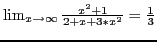

Next: Continuous and discontinuous functions Up: Theory of limits Previous: The concept of infinity Contents Index
Given a function  . If the independent variable
. If the independent variable  takes on
any series of values such that
takes on
any series of values such that
Here is an example of a limit using SAGE:
[fontsize=\scriptsize,fontfamily=courier,fontshape=tt,frame=single,label=\sage] sage: limit((x^2+1)/(2+x+3*x^2),x=infinity) 1/3
This tells us that .